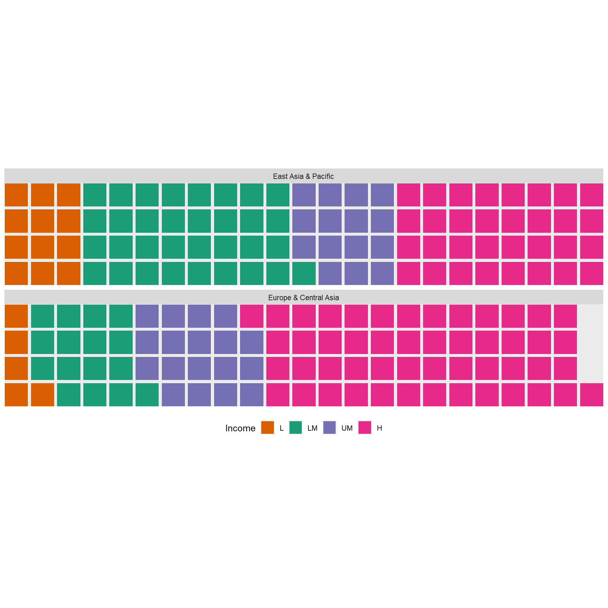

#install.packages("remotes")
#remotes::install_github("hrbrmstr/waffle")23 W
23.1 geom_waffle
Package
waffle (Rudis and Gandy 2023)
Description
Create waffle plots. A waffle chart can be used as an alternative to pie charts or bar charts to display the composition of a sample. It divides the plotting area into a grid of small squares, making proportions easier to compare and count at a glance.
Understandable aesthetics
required aesthetics
fill (so the geom knows which column to map the fills to)
values (which column you’re mapping the filling for the squares with)
optional aesthetics
alpha, colour, group, linetype, linewidth
See also
Example
library(waffle)
worldbankdata |>
filter(Region == "East Asia & Pacific" | Region == "Europe & Central Asia") |>
select(Region, Income, Year) |>
group_by(Region, Income) |>
tally() |>
ggplot(aes(fill=Income, values=n)) +
geom_waffle(aes(colour = income),color="white",
n_rows = 4, size = 0.3, make_proportional = TRUE,
height = 0.9, width = 0.9) +
scale_fill_manual(values = c("#d95f02","#1b9e77","#7570b3","#e7298a"))+
facet_wrap(~Region, ncol=1) +
scale_x_discrete(expand=c(0,0)) +
scale_y_discrete(expand=c(0,0)) +
coord_equal()+
theme(legend.position = "bottom")
23.2 geom_weave
Package
ggdist(ggdist?)
Description
Creates dot-weave plot. This ensures the plot fits within the available space.
Understandable aesthetics
required aesthetics
x
y
optional aesthetics
alpha, colour, group, size, slab_alpha
See also
geom_dotinterval, geom_point, geom_jitter
Example
library(ggdist)
p1 <- worldbankdata |>
ggplot(aes(y = Electricity, x = Income)) +
geom_weave(color="black") + ggtitle("Without scale_y_binned")
p2 <- worldbankdata |>
ggplot(aes(y = Electricity, x = Income)) +
geom_weave(color="black") +
scale_y_binned(n.breaks = 10) + ggtitle("With scale_y_binned")
p1|p2Warning: Removed 5693 rows containing missing values or values outside the scale range
(`geom_dotsinterval()`).
Removed 5693 rows containing missing values or values outside the scale range
(`geom_dotsinterval()`).